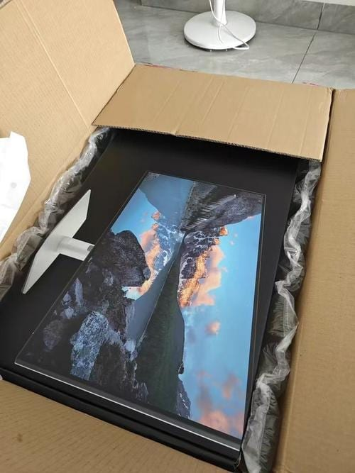

戴尔 U2723QE

戴尔 UltraSharp 27 英寸 4K 商务旗舰，IPS Black 面板对比度翻倍至 2000:1，黑色更深邃。一根 Type-C 线完成 90W 供电、数据与视频传输，内置 RJ45 网口与 KVM 切换，接口丰富的它本身就是一台桌面扩展坞，办公创作皆宜。
客观评测
U2723QE 采用 27 英寸 4K IPS Black 面板，对比度达 2000:1，暗部细节优于普通 IPS，实测 DCI-P3 色域 98%，出厂色准 ΔE<2，满足修图调色需求。400 尼特亮度支持 DisplayHDR 400。接口是最大卖点：Type-C 支持 90W PD 供电与视频传输，另有 DP 1.4、HDMI 2.0、四个 USB 3.2 与 RJ45 网口，可作笔记本扩展坞，支持 KVM 与菊花链。支架扎实，适合商务与创作办公。
主观点评
这台显示器最打动人的是「一根线搞定一切」：MacBook 网线、键鼠、显示器全靠一根 Type-C，桌面瞬间清爽，还顺手给电脑充了电。IPS Black 的黑位确实比办公室的老显示器通透，修图看片都舒服。它不是为游戏而生的机器，60Hz 打游戏略显平淡，但论办公生产力与做工质感，U2723QE 是我心中 4K 商务屏的标杆。
优点与不足
- IPS Black 面板 2000:1 对比度，黑色更扎实
- Type-C 90W 供电加 RJ45 网口，一根线扩展全桌
- 出厂校色色准优秀，做工与售后一流
- 60Hz 刷新率不适合高帧游戏
- 同尺寸 4K 中价格偏高
- HDR 400 观感提升有限
参数规格
| 尺寸 | 27 英寸（16:9） |
|---|---|
| 面板 | IPS Black（LG Display） |
| 分辨率 | 3840×2160（4K UHD） |
| 刷新率 | 60Hz |
| 响应时间 | 5ms GTG（快速模式约 8ms 正常模式） |
| 色域 | 98% DCI-P3、100% sRGB、100% Rec.709 |
| 亮度 | 典型 400 尼特 |
| HDR | DisplayHDR 400 |
| 对比度 | 2000:1（IPS Black） |
| 接口 | Type-C 90W PD、DP 1.4、HDMI 2.0、RJ45 网口、USB 3.2×4 |
| 支架 | 升降、俯仰、侧转、旋转，支持壁挂 100×100mm |
| 护眼 | 低蓝光（ComfortView Plus）、不闪屏 |
| 其他 | KVM 切换、菊花链 DP 输出、三年高级更换服务 |